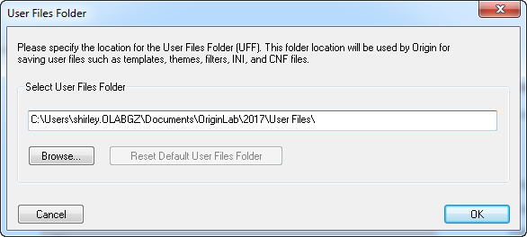
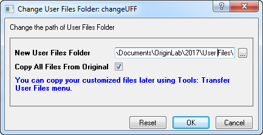

Der Anwenderdateiordner
UserFilesFolder
Wenn Sie Origin zum ersten Mal starten, öffnet sich ein Dialog, der Sie auffordert, einen Standardordner zum Speichern Ihrer benutzerdefinierten Dateien festzulegen -- dem Anwenderdateiordner (UFF). Sie können die Dateien jederzeit auch in einem anderen Ordner speichern, aber dieser Ordner dient als Standardspeicherort für Diagrammvorlagen, Vorlagen, Kurvenanpassungsfunktionen, Origin Importfilterdateien (OIF) usw. und muss beschreibbar sein bei gegebener Login-Zulassung des Anwenders.
Der Standardort ist ein Ordner mit dem Namen Anwenderdateien, der im Verzeichnis Eigene Dokumente des Anwenders erstellt wird.
- 
|
Hinweis:
- Die folgenden Ordner und Dateien befinden sich nicht im Anwenderdateiordner: OCTemp, AutoSave, License und Abkürzungen zu den Ordner der Origin-Installation und den Samples. Sie können ihre Pfade im Dialog Optionen auf der Registerkarte Systempfad nachsehen.
- Origins Installationsordner und seine Unterordner sowie der Anwenderdateiordner einer anderen Version von Origin sollte nicht als Anwenderdateiordner verwendet werden.
|
Der gleiche Anwenderdateiordner kann von verschiedenen Rechnern gemeinsam genutzt werden. Es ist beispielsweise möglich, einen USB-Stick als Anwenderdateiordner zu verwenden. Der Anwenderdateiordner kann dann auf jedem beliebigen Rechner verwendet werden, in den der USB-Stick gesteckt wird. Beachten Sie, dass diese Art des Teilens von Origin-Dateien nicht für Personen empfohlen wird, die Origin in einem Concurrent-Netzwerk verwenden. In solchen Fällen sollten Gruppenordner verwendet werden, um Origin-Dateien zu teilen.
 |
Um Ihren aktuellen Anwenderdateiordner zu öffnen/aufzurufen,
- wählen Sie Hilfe: Ordner öffnen: Anwenderdateiordner im Hauptmenü.
- Wählen Sie Einstellungen: Optionen > Registerkarte Systempfad und suchen Sie nach dem Pfad des Anwenderdateiordners.
- Öffnen Sie das Skriptfenster (Fenster: Skriptfenster), geben Sie "%Y=" ein und drücken Sie dann <Enter>.
- Führen Sie
cd 1; im Skriptfenster aus.
|
Anwenderdateiordner ändern
Um den Speicherort des Anwenderdateiordners zu ändern, können Sie die X-Funktion changeUFF benutzen. Um diese X-Funktion auszuführen:
- Wählen Sie im Menü Einstellungen: Optionen, um den Dialog Optionen aufzurufen. Wählen Sie auf der Registerkarte Systempfad die Option Anwenderdateiordner und klicken Sie auf die Schaltfläche Ändern.
Oder
- Führen Sie den Befehl
changeUFF -d; aus.
- 
Dann können Sie den neuen Anwenderdateiordner festlegen oder einen neuen Ordner als Anwenderdateiordner durchsuchen. Sie können auch entscheiden, ob Sie alle Dateien aus dem ursprünglichen Anwenderdateiordner in den neuen kopieren möchten. Um den neu festgelegten Anwenderdateiordner zu benutzen, starten Sie Origin neu.
Es kann vorkommen, dass Sie nicht alle, sondern nur manche Dateien vom ursprünglichen Anwenderdateiordner in den neuen kopieren wollen. In diesem Fall können Sie das Kästchen Alle Dateien aus dem ursprünglichen Anwenderdateiordner kopieren deaktivieren. Nachdem Sie Origin neu gestartet haben, um den neuen Anwenderdateiordner zu verwenden, können Sie das Hilfsmittel Anwenderdateien übertragen verwenden, um die gewünschten Dateien in den neuen Anwenderdateiordner zu übertragen.
Sie können auch den Befehl del -path; verwenden, um den Anwenderdateiordner zurückzusetzen, aber das ist nicht empfohlen.